Question 3
Contents
(1)
The problem is
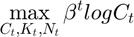 subject to 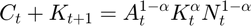; 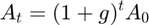; 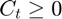; 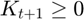; 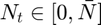.
Euler equation is
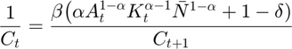.
Resource Constraint is
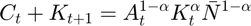.
Define that 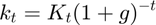 and 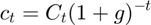 for all t. Then
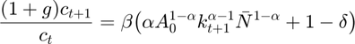;
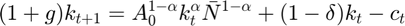.
Assuming 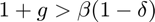, these equations give a unique balanced path, in which 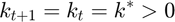 and 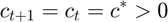, with
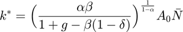;
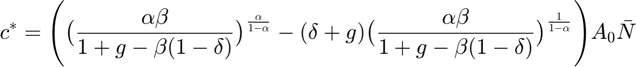.
(2)
The phase diagram is like following:

The saddle path has the form:

clear g=0.2; alpha= 0.3; beta =0.9; delta = 0.5; k0=1; barN=1; A0= 1; ke = ( alpha*beta/ ( 1+g -beta*(1-delta)))^(1/(1-alpha)) * A0 * barN; ce = ( ( alpha*beta/ ( 1+g -beta*(1-delta)))^(alpha/(1-alpha)) - ... (delta +g)*( alpha*beta/ ( 1+g -beta*(1-delta)))^(1/(1-alpha)) )* A0 * barN; c0=0.48:0.0001:5; B=size(c0,2); Accept=zeros(B,1); T=6; k=zeros(T,1); c=zeros(T,1); k(1)=k0; for b=1:B c(1)=c0(b); for t=1:T k(t+1)= (A0^(1-alpha)*k(t)^alpha*barN^(1-alpha) +(1-delta)*k(t)-c(t))/(1+g); c(t+1)= beta*( alpha* A0^(1-alpha)*k(t+1)^(alpha-1)*barN^(1-alpha)+1-delta)*c(t)/(1+g); if k(t+1)<ke && c(t+1)>ce break; else if k(t+1)>ke && c(t+1) <ce break; end end end if t==T Accept(b)=1; end end lower= find(Accept,1,'first'); upper= find(Accept,1,'last'); C0 = (c0(lower)+c0(upper))/2; fprintf('The approximate consumption on saddle path is %1.4f', C0);
The approximate consumption on saddle path is 0.8925
Comment: You need to set T to be small. A large T will eliminate every possible C0.